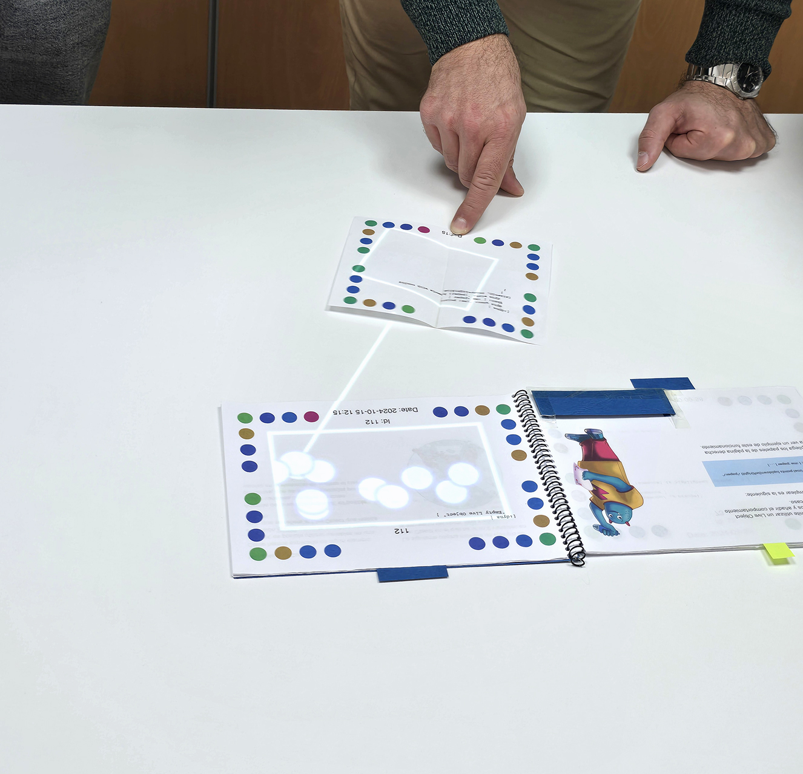
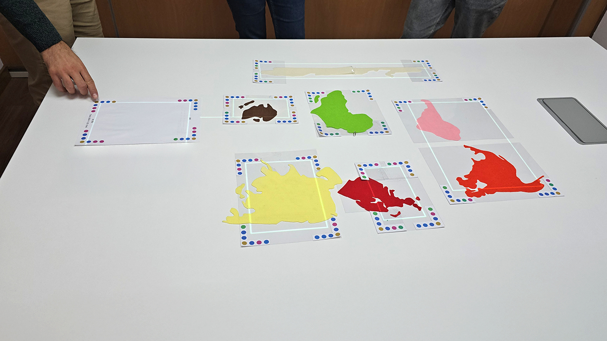

Transforma objetos del mundo real en herramientas interactivas de aprendizaje

DynaClassroom es un entorno de aprendizaje para que estudiantes y docentes puedan explorar cualquier idea juntos, dotando de comportamiento computacional a los objetos del mundo real.
En DynaClassroom usar el ordenador no significa utilizar pantallas, ratones y teclados, sino trabajar en el mundo real con objetos físicos que se pueden manipular.
Los programas de ordenador se convierten en objetos del mundo real.

Pueden usarse papeles, pero también cualquier otro objeto, disponible en clase o manualidades construidas a propósito.

No necesitamos crear un mundo virtual con VR, sino que se aprovechan las propiedades de los objetos reales

En DynaClassroom no creemos que la computación consista en aplicaciones cerradas con usuarios que son consumidores pasivos de los productos creados por otros.
En DynaClassroom los estudiantes participan en la construcción de su propio conocimiento.

Es un medio abierto al aprendizaje mediante exploración y experimentación.

En DynaClassroom para que algo funcione debe estar visible para todo el mundo. Todo se puede inspeccionar, estudiar y cambiar.

Puedes usar los Kits que han preparado otros o puedes cambiar cualquier cosa de esos Kits, remezclar Kits de otros o construir los tuyos propios.

NO se necesitan desarrolladores para crear el software, son los usuarios los que lo hacen para aprender sobre cualquier tema que se quiera explorar.
DynaClassroom es un medio para el aprendizaje mediante la aplicación práctica de la computación a cualquier asignatura o temática .
NO es otra herramienta para aprender a programar.

NO es un aula de informática, programación, robótica o pensamiento computacional como las existentes. Tampoco es algo que lo reemplace.

Permite aplicar el pensamiento computacional transversalmente a todas las asignaturas y actividades.
Es un medio que fomenta la participación activa y la colaboración para aprender mediante exploración. Los estudiantes aprenden todos juntos.
Cada estudiante NO está aislado en su pantalla

Se propician dinámicas de grupo colaborativas e integradoras.
Ex3 = Experimentar , Explorar y Expresarse de manera más colaborativa y natural.